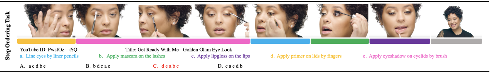

Task Description
The task is to sort a set of facial images from a video into the correct order according to given step descriptions. The goal of this task is to understand the changes that a given action described in natural language will cause to a face object. The effects of action descriptions on facial appearances can vary greatly, depending not only on the text description, but also on the previous state of the facial appearance. Some actions may bring obvious facial changes, such as "apply red lipsticks on the lips", while some actions only cause slight differences, such as "apply foundation on the face with brush", which can be better detected if the previous appearance status is known. Therefore, fine-grained multimodal analysis on visual faces and textual actions is necessary to tackle this task.

The task is to sort a set of action descriptions into the right order that these actions are performed in the video. It aims at evaluating models' abilities in cross-modal semantic alignments between visual and texts. Compared with previous video-text cross-modal localization, the novelty of this task has three aspects. Firstly, different actions share similar background contexts, thus it requires the model to specifically focus on actions and action-related objects instead of correlated but irrelevant contexts. Secondly, since different actions can be very similar in visual appearance, the task demands fine-grained discrimination in particular. Finally, our task goes beyond mere single text to single video localization and requires long-term temporal action reasoning and textual understanding.
